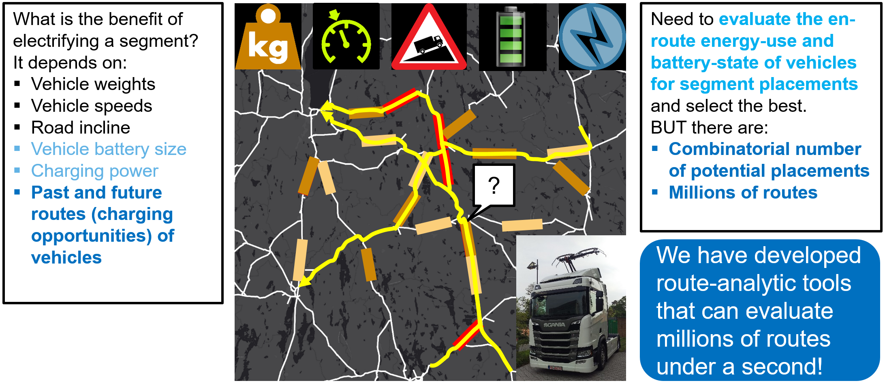

Electric Road Systems (ERS) are viable technological solutions that can decarbonize heavy freight transports.
But the placement and dimensioning of components of an ERS affect the business models of many actors (vehicle manufacturers, charging equipment manufacturers, battery manufacturers, electric network operators, and road authorities). This in turn can hinder or enable the financial sustainability of ERS and its large-scale rollout.
From a transport demand perspective, no corridor-placement of electric road segments is cost-effective since on-board batteries of moving vehicles can become fully charged and thereby decrease the utility of the electrified segments. Constant gaps between electrified segments does not fix this problem.
The utility of ERS network is heavily influenced by the transport routes of vehicles. The benefits of optimal scenarios are:
Click the information icon next to the page title for details.
Let's explore the placement and effects of some transport demand optimized- and not-so-optimal corridor-based scenarios for some parameter settings.
Disclaimer: This is a research prototype that is not to be used for commercial purposes. For commercial products contact info@thegordian.io.
In order to accelerate the electrification of the heavy freight transport industry and to realize of the positive effects of this, it is essential that stakeholders discuss and make decisions about Electric Road Systems (ERS) rollout scenarios that maximize the benefits, minimize the cost and thereby enable the financial sustainability ERS for all stakeholders (vehicle manufacturers, charging equipment manufacturers, battery manufacturers, electric network operators, and road authorities).
No presently discussed, largely corridor-based scenario is cost-effective in terms of a transport demand perspective because on-board batteries of moving vehicles can become fully charged and thereby decrease the utility of the electrified segments. Constant gaps between electrified segments does not fix this problem.
The utility of an electrified segment in a network is heavily influenced by the transport routes of vehicles as is it is show in the figure below.  Figure: Illustration of transport route dependent aspects and challenges of ERS placement scenario evaluations and optimizations. 3 routes shown in yellow, green, and purple and segments of three placement scenarios shown in red, light and dark brown.
In the Route Based ERS Network Optimization (RENO) project (financed by Vinnova and Trafikverket), we have adapted and applied years of research on trajectory data compression, indexing, querying, and analytics in order to optimize the placement of ERS from a transport demand perspective.
Compared to corridor-placements the benefits of optimal scenarios are:
This page is a web-based dynamic exploration tool of the results. Use it to explore the placement and effects of some transport demand optimized- and not-so-optimal corridor-based scenarios for some parameter settings.
Disclaimer: This is a research prototype that is not to be used for commercial purposes. For commercial products contact info@thegordian.io.
Hover over the map for statistics
...